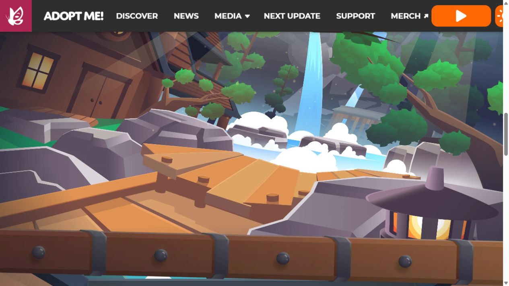
Adopt Me — minimum bar
Official website video frame
Source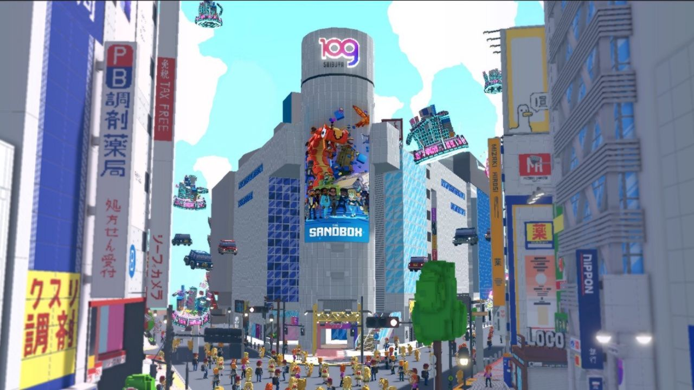
The Sandbox
Partnership promotional scene
Source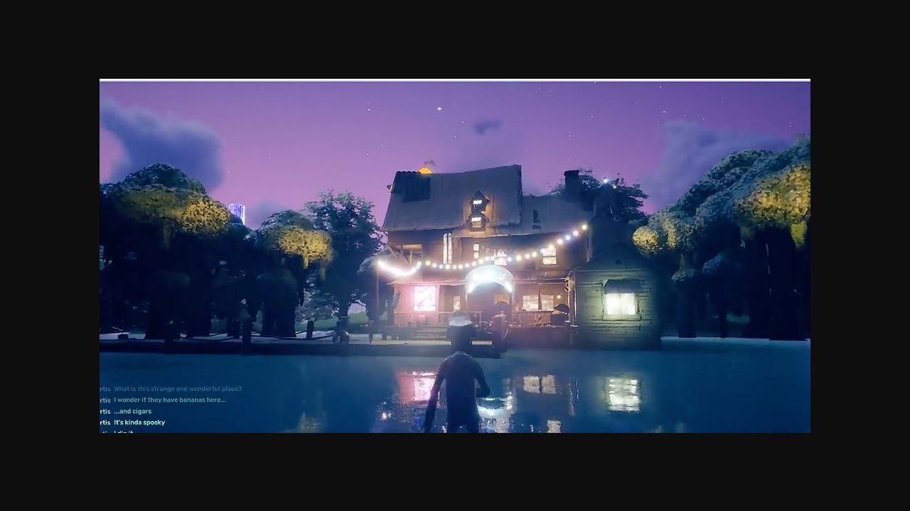
Otherside
Historical gameplay image, third-party republication
Source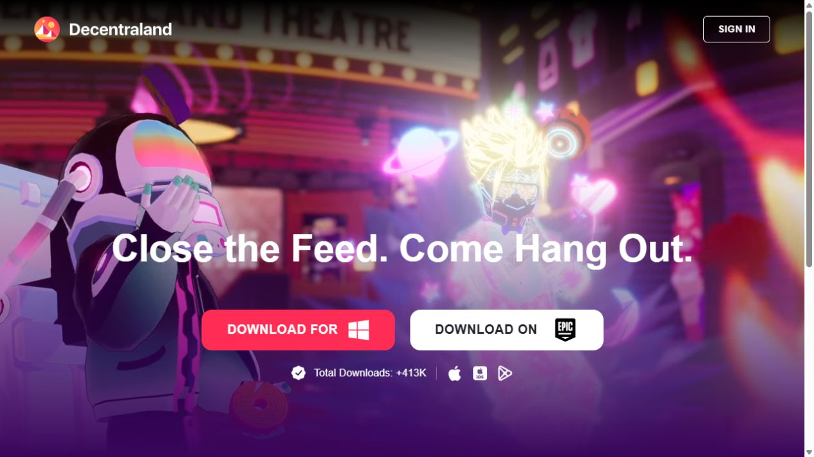
Decentraland
Official landing-page promotional image
Source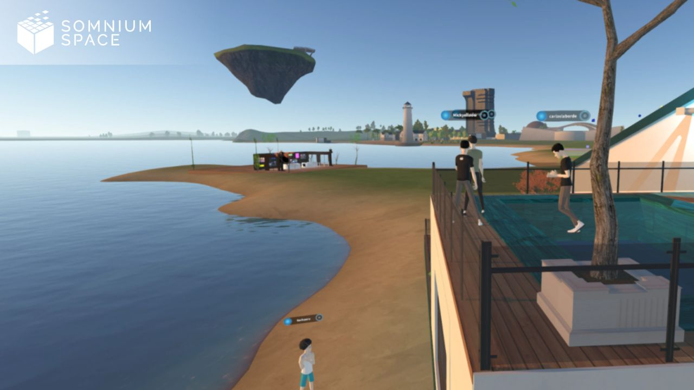
Somnium Space
Historical publisher screenshot
Source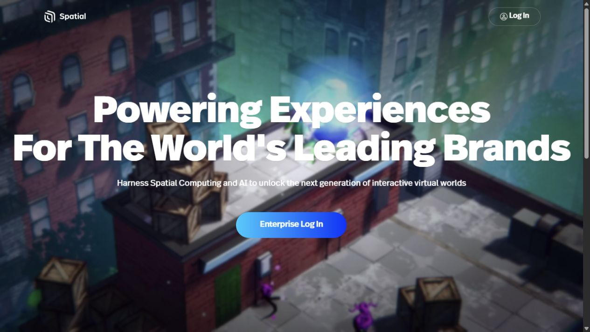
Spatial
Official website environmental background
Source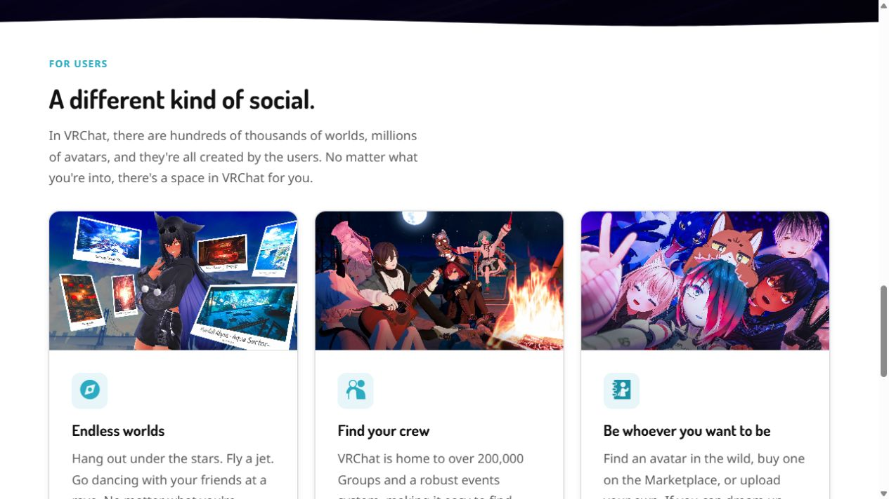
VRChat
Official world/avatar panels
Source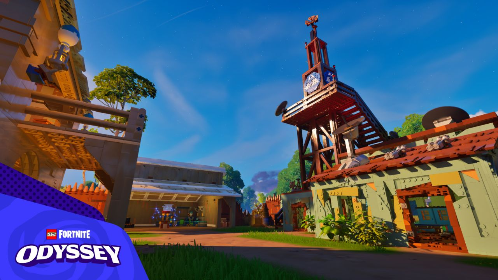
LEGO Fortnite Odyssey
Official 2024 village image
Source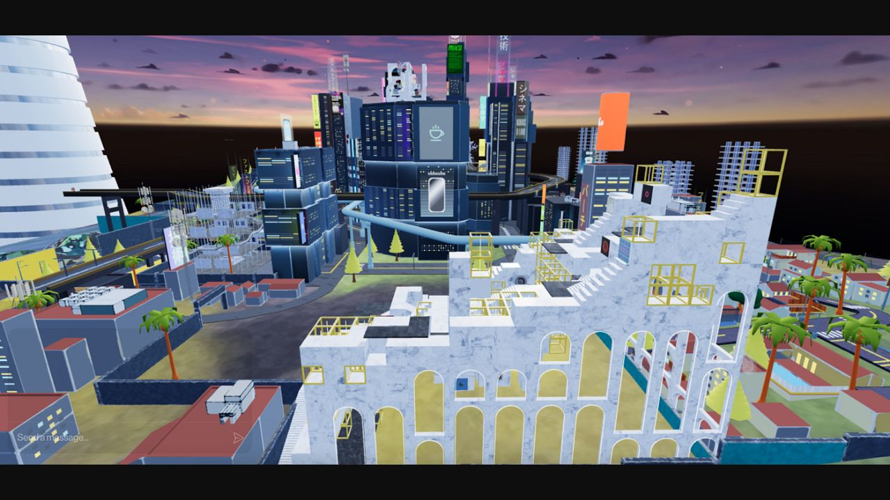
Voxels / CryptoVoxels
Historical tour image published by Museum of Crypto Art
Source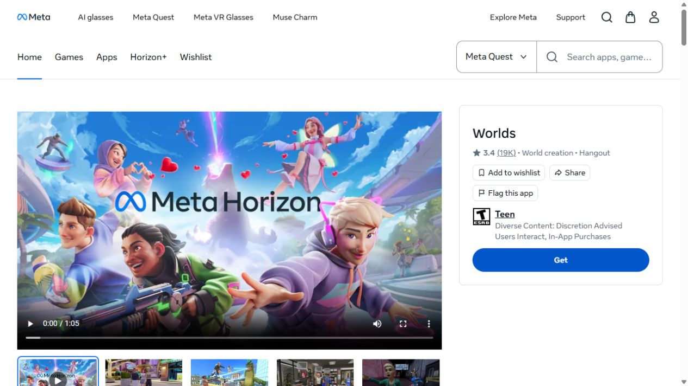
Meta Horizon Worlds
Official trailer poster; not runtime proof
Source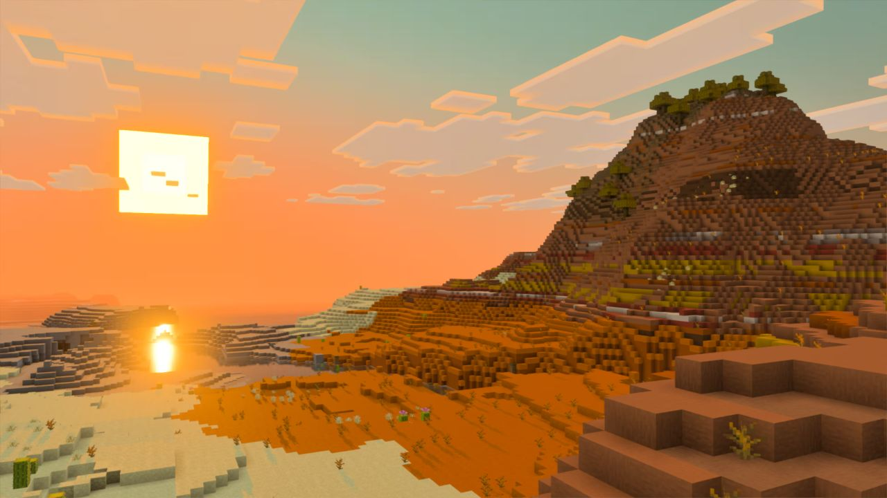
Minecraft Vibrant Visuals
Official enhanced mesa screenshot
Source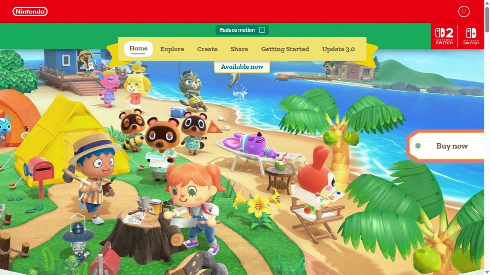
Animal Crossing
Official key art; character design reference
Source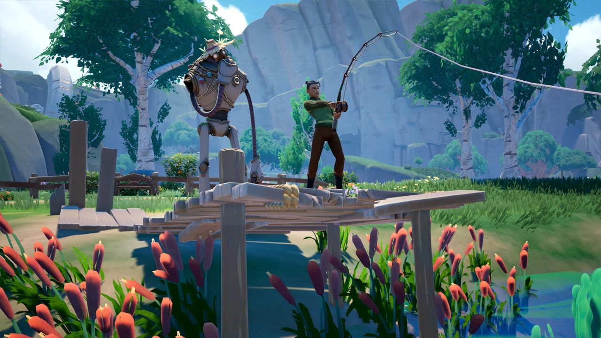
Palia
Official fishing screenshot
Source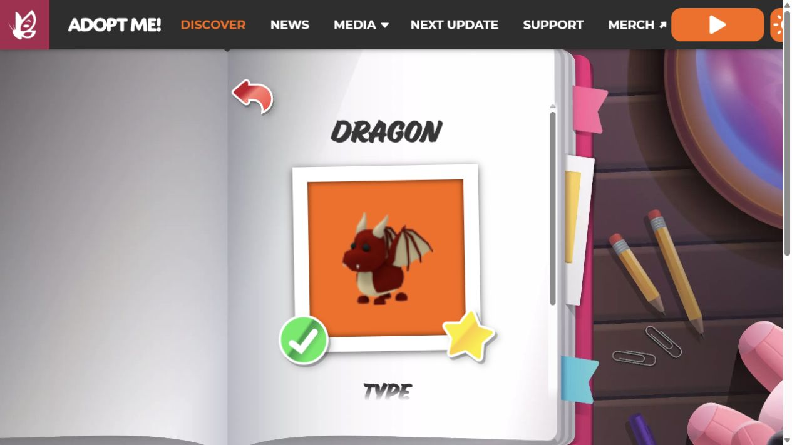
Adopt Me Dragon
Official pet display
Source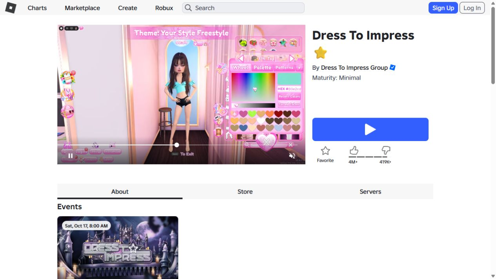
Roblox Dress To Impress
Official listing video frame
Source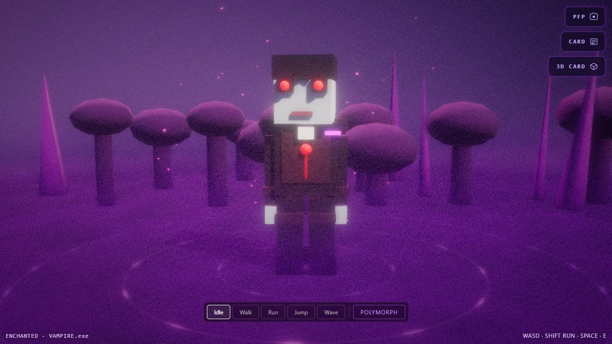
Bitcoin BlockForge Identity #057
Live inscription browser render; voxel character
Source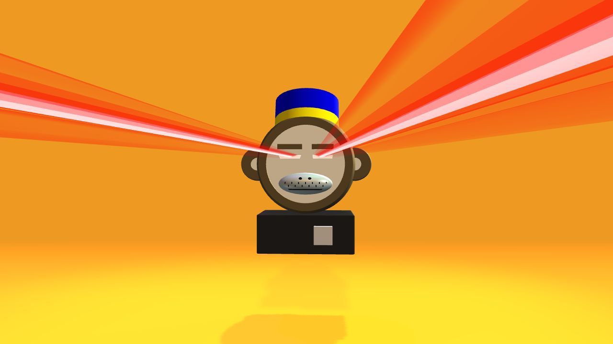
Bitcoin OCM Dimensions #215
Live generative sculpture; not a voxel metaverse
Source